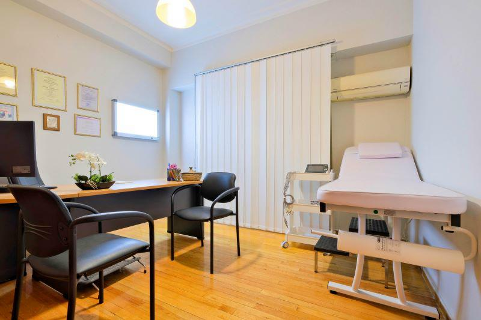
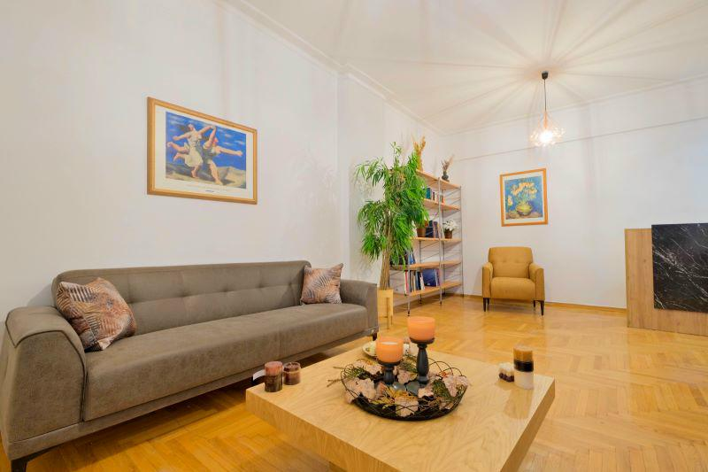
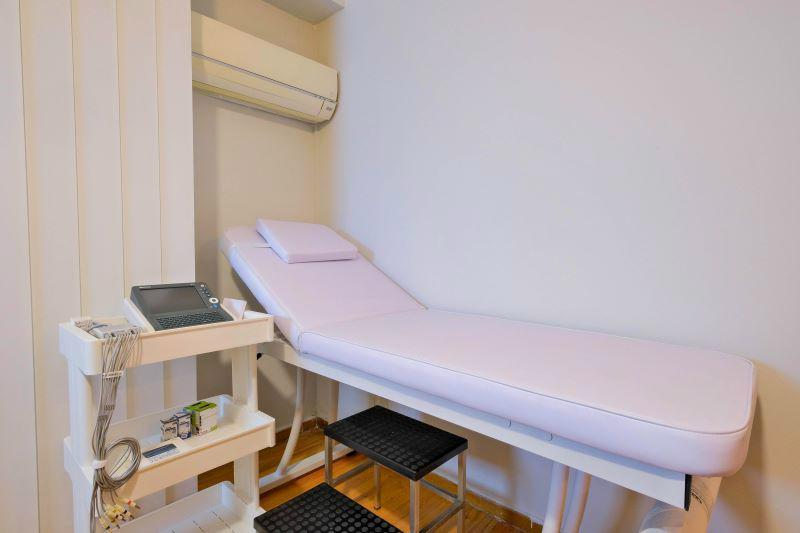

Βιογραφικό
Η Δήμητρα Σπ. Καββούρη είναι Ιατρός Παθολόγος και Επιμελήτρια Β' της Παθολογικής Κλινικής του Ναυτικού Νοσοκομείου Αθηνών, όπου εργάζεται από το 2021. Αποφοίτησε από την Ιατρική Σχολή ΑΠΘ (2006–2012) και τη Στρατιωτική Σχολή Αξιωματικών, ενώ ολοκλήρωσε την ειδικότητά της στο Λαϊκό Γενικό Νοσοκομείο Αθηνών (2018–2021).
Είναι κάτοχος Μεταπτυχιακού Διπλώματος Ειδίκευσης στην «Αρτηριακή Υπέρταση και Συνοδά Καρδιαγγειακά-Νεφρολογικά Νοσήματα» από το Εθνικό και Καποδιστριακό Πανεπιστήμιο Αθηνών (2019–2021). Εξειδικεύεται στη διάγνωση και θεραπεία χρόνιων παθήσεων με έμφαση στην ολιστική πρόληψη καρδιαγγειακού κινδύνου.
Συνεργαζόμενα Νοσοκομεία
«Αποτελεσματική, έμπειρη, αξιόπιστη και προσιτή.»
— Ασθενής, InstaDoctor
Εξειδίκευση
Υπέρταση
Διάγνωση, παρακολούθηση και εξατομικευμένη θεραπεία αρτηριακής υπέρτασης.
Υπερλιπιδαιμία
Αντιμετώπιση διαταραχών λιπιδίων και μείωση καρδιαγγειακού κινδύνου.
Σακχαρώδης Διαβήτης
Ολιστική διαχείριση διαβήτη τύπου 1 και 2, με πρόληψη επιπλοκών.
Καρδιαγγειακός Κίνδυνος
Εκτίμηση και πρόληψη συνολικού καρδιαγγειακού κινδύνου με σύγχρονες μεθόδους.
Θυρεοειδής
Έλεγχος, διάγνωση και παρακολούθηση παθήσεων θυρεοειδούς αδένα.
Γενική Παθολογία
Ευρύ φάσμα παθολογικών νοσημάτων και τακτικός προληπτικός έλεγχος.
Υπηρεσίες
~30 λεπτά · €40
ΗΚΓ
€20
Το Ιατρείο

Γραφείο Ιατρού
Αίθουσα Αναμονής
ΕξεταστήριοΕπικοινωνία
Διεύθυνση Ιατρείου
Τιμολέοντος Βάσου 28
Πλατεία Μαυίλη, Αθήνα
450 μ. από στ. Αμπελόκηποι (Γρ. 3 – Μπλε)
Τηλέφωνο
Ωράριο Ιατρείου
Δευτέρα – Παρασκευή
15:00 – 22:00
Προσβασιμότητα
Το ιατρείο είναι πλήρως προσβάσιμο σε ΑμεΑ
Ερωτήσεις & Απαντήσεις
Το ιατρείο λειτουργεί Δευτέρα έως Παρασκευή, 15:00–22:00, στην Τιμολέοντος Βάσου 28, Πλατεία Μαυίλη, Αθήνα.
Η κλινική εξέταση κοστίζει €40 και περιλαμβάνει εξέταση και ηλεκτρονική συνταγογράφηση (~30 λεπτά). Οι ιατρικές βεβαιώσεις κοστίζουν €20.
Το ιατρείο βρίσκεται σε 450 μέτρα από τον σταθμό Αμπελόκηποι (Γραμμή 3 – Μπλε).
Ναι, η Δήμητρα Καββούρη πραγματοποιεί κατ' οίκον επισκέψεις. Επικοινωνήστε στο 210 744 9459 για ραντεβού.
Εξειδικεύεται στην αρτηριακή υπέρταση, σακχαρώδη διαβήτη, υπερλιπιδαιμία, θυρεοειδή και πρόληψη καρδιαγγειακού κινδύνου. Είναι κάτοχος ΜΔΕ ΕΚΠΑ στην Αρτηριακή Υπέρταση και Καρδιαγγειακά Νοσήματα.
Ναι, το ιατρείο είναι πλήρως προσβάσιμο σε άτομα με αναπηρία (ΑμεΑ).
Κλείστε Ραντεβού
Επιλέξτε την ημέρα και ώρα που σας εξυπηρετεί. Θα λάβετε αυτόματα επιβεβαίωση στο email σας.

Ηλεκτρονικό Ραντεβού
Επιλέξτε την ημέρα και ώρα που σας εξυπηρετεί. Θα λάβετε αυτόματα επιβεβαίωση στο email σας μέσω Google Calendar.
- Άμεση επιβεβαίωση στο email σας
- Υπενθύμιση πριν το ραντεβού
- Δυνατότητα ακύρωσης / αλλαγής